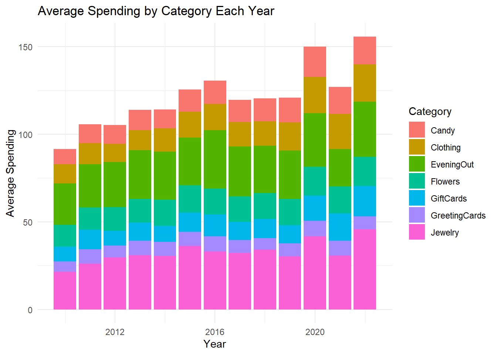
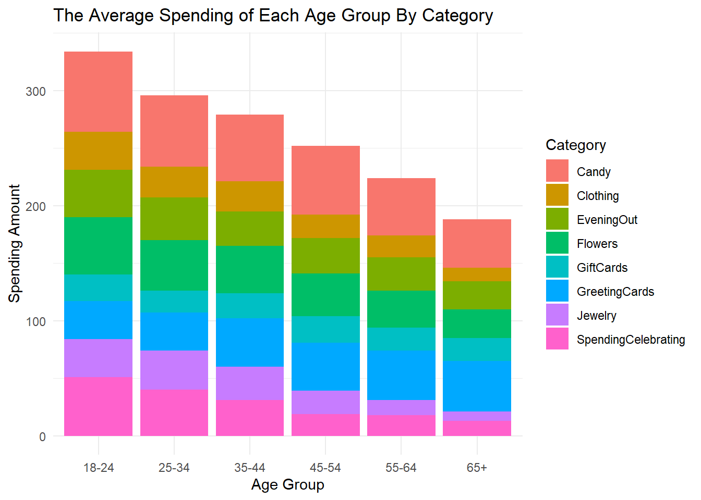

Now that we have our data sets, we want to form a hypothesis about the data and then try to visualize that hypothesis.
Ex. I think that candy is the most popular gift year after year
Next, we ask ourselves, what do we need to do the data to be able to visualize this hypothesis.
So in this case we would want to grab each years spending categories and plot that in something like a stacked bar graph or pie chart
spending_data <- historical_spending %>%select(Year, 4:10)spending_long <- spending_data %>%pivot_longer(cols =-Year,names_to ="category",values_to ="spending" )ggplot(spending_long, aes(x = Year, y = spending, fill = category)) +geom_bar(stat ="identity") +labs(title ="Average Spending by Category Each Year",x ="Year",y ="Average Spending",fill ="Category") +theme_minimal()

Intepretation
Our initial hypothesis that candy was always the most popular gift bought on Valentine’s Day, was clearly not supported by the data. The analysis, however, reveals a quite surprising trend showing candy remains persistently the least popular type of gift throughout the 2012-2023 period. The spending on candy has remained stubbornly low, somewhere around 5-10 units each year, showing minimal increase in tandem with the overall increase in Valentine’s Day-related spending. More evidence of a preference clearly emerged from gifts that are more valuable and experiential. Top contributors to Valentine’s Day-related spending are jewelry and dinner outings, growing steadily, reaching the height of 30-35 units in 2023. These two categories almost solely account for half of the entire spending, showing how marked the consumer preference is for both tangible goods and shared experiences. A nice trend, coming in after 2018 is the explosive growth in the gift card and jewelry spend. Both relatively small starting points have mushroomed and will hit around 25-30 units in 2023. This points at changing consumer behavior; from more generic and versatile gifts that the receiver can use at their discretion or to high-value tokens of affection.
What We Learned
We now understand how to come up with a hypothesis about a data set, and then use that hypothesis as a basis for cleaning up and aggregating our data for visualization. Furthermore, we now understand that we can use functions like pivot_longer() to restructure our data set for visualization. We will continue to come up with hypotheses later in this report and show that as our hypotheses become more sophisticated, it will require more sophisticated data wrangling techniques to visualize them.
Hypothesis: Younger people spend more on average than Older people.
Data Aggregation
First, let’s aggregate our data. In this case, its going to be the gifts_age data set.
# First, we are going to pivot long to restructure the data set in such a way# that it grabs each categories average value and puts it into a new column called# "Spending" and the Category into a "Category" column.gifts_age_Lpivot <- gifts_age %>%pivot_longer(# All columns except `Age`cols =-Age,# Grab all `cols` Column names and put them into a column called Categorynames_to ="Category",# Grab all `cols` Column values and put them into a column called Spendingvalues_to ="Spending" )# Second, we grab our newly pivoted dataframe and use it as data for visualization.# In this case, we grab `gifts_age_Lpivot` and grab by `Age`, `Spending`, and fill colors in by `Category`.ggplot(gifts_age_Lpivot, aes(x = Age, y = Spending, fill = Category)) +geom_bar(stat ="identity") +labs(title ="The Average Spending of Each Age Group By Category",x ="Age Group",y ="Spending Amount") +theme_minimal()

Interpretation
The analysis of the average spending by age group reveals a clear trend: younger individuals tend to spend more on Valentine’s Day gifts compared to older age groups. The data shows that the 18–24 age group has the highest average spending, with a significant portion allocated to categories such as jewelry and experiences. As we move up in age, the average spending decreases, with the 65+ age group spending the least. This trend suggests that younger individuals are more likely to invest in gifts, possibly due to cultural factors or the significance placed on Valentine’s Day during their formative years. The data also suggests that, as people grow older, they seem to spend less money on Valentine’s Day. This could be due to a variety of factors, such as changing priorities, financial constraints, or a shift in the way they celebrate the holiday—suggested by the increased spending in greeting cards, which may be more meaningful and accessible to older individuals. Overall, the data supports the hypothesis that younger people, on average, spend more on Valentine’s Day, while also revealing interesting insights into spending behavior across different age groups.
Note: The data visualization and data set themselves are NOT representative of real spending habits as much nuance has been lost in the data. All interpretations are purely off of what the visualization suggest and should not be taken as fact, merely as a reflection of the limited trends portrayed within the simplified data
What we Learned
We learned how tatterns across categoro break down a hypothesis using grouped data and transform it into a visual insight. This process showed us how visualization can uncover trends that may not be obvious in raw data alone.